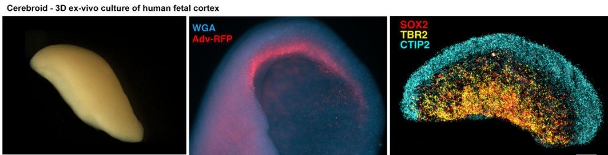
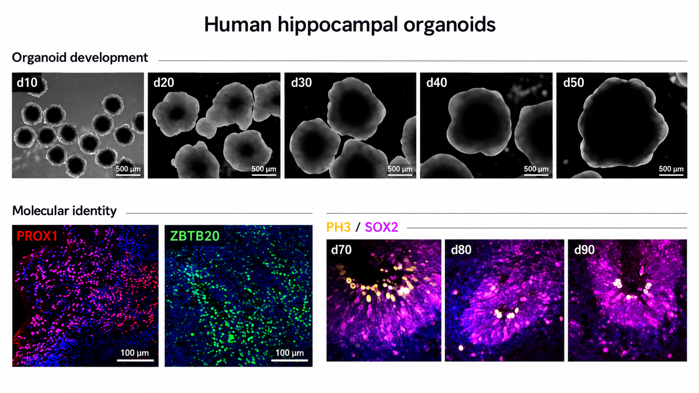

Human brain organoids for development and disease modelling
Human brain development depends on interactions among many cell types organised across space and time. Three-dimensional neural models allow us to study these processes in experimentally accessible human systems while preserving features that are difficult to reproduce in conventional two-dimensional culture.
Our lab uses several complementary approaches, including stem cell-derived human brain organoids, multicellular assembloids and ex vivo human fetal brain cerebroids. Rather than relying on a single model, we choose and benchmark each system according to the biological question.
A particular focus is our cerebroid platform, which provides a direct experimental window into developing human brain tissue while complementing the flexibility of iPSC-derived organoids.
- Cortical (cerebral) and hippocampal organoids
- Human fetal brain cerebroids
- Assembloids incorporating microglia and vascular cell types
- Models of the developing choroid plexus
- Single-cell, imaging and functional analysis of 3D neural tissue

Human cortical organoid labelled for neural stem cell markers, illustrating the organised progenitor zones that can emerge in 3D culture.
Cerebroids
Preserving native human brain tissue organisation
Our cerebroid platform uses small pieces of developing human brain tissue maintained ex vivo in three dimensions. Unlike stem cell-derived organoids, cerebroids begin with native developing tissue and preserve key features of cortical architecture together with endogenous microglia, vascular cells and extracellular matrix components, while still allowing controlled experimental perturbation.
We have used cerebroids to examine how inflammatory signals influence neural stem cells and cortical development. In our Nature Neuroscience study, the inflammatory cytokine IL-17A altered neural stem cell behaviour and disrupted cortical development, including changes in tissue growth and folding. The model gives us a way to test mechanisms in human tissue that can then be compared with organoid and assembloid systems.
- Preserves native cortical architecture and developmental cell diversity
- Retains endogenous immune, vascular and extracellular matrix components
- Allows controlled ex vivo perturbation of developing human brain tissue
- Complements stem cell-derived organoids and assembloids
- Supports mechanistic studies of inflammation and cortical development
Muhammad Z. K. Assir et al. Modeling maternal immune activation in 3D ex vivo human fetal brain cerebroids reveals IL-17A-driven disruption of cortical development. Nature Neuroscience, 2026. View publication

Human fetal brain cerebroids preserve features of native developing cortical tissue while allowing controlled ex vivo experiments.

Development and molecular characterisation of human hippocampal organoids, showing organoid growth and hippocampal and neural stem cell markers.
Hippocampal organoids
Modelling human hippocampal development and neurogenesis
We have developed human iPSC-derived hippocampal organoids that maintain organised neural stem cell niches, support ongoing neurogenesis and generate hippocampus-associated neuronal populations. We benchmark these models against human fetal hippocampal tissue to assess regional identity and developmental progression.
We are using the platform to investigate how environmental signals affect hippocampal development. In our recent preprint, excess glucocorticoid exposure reduced neural stem cell proliferation and shifted cells towards a premature quiescent-like state, providing a human model for studying how developmental stress can influence hippocampal growth and neurogenesis.
Olivia Soper et al. A Human Hippocampal Organoid Model with Sustained Neural Stem Cells Reveals State Shifts Under Glucocorticoid Stress. bioRxiv, 2025. Read the preprint
Assembloids
Building more complete multicellular brain models
Microglia, endothelial cells and perivascular cells contribute to brain development, tissue remodelling and responses to inflammation, yet these populations are often absent from standard brain organoid systems. We therefore develop multicellular assembloids that bring additional cell types into human 3D neural models.
These systems allow us to examine interactions among neural, immune and vascular cells during development and disease. We are applying them to questions spanning maternal inflammation, cortical development, brain ageing and neurodegeneration, alongside related models of the choroid plexus.
Our perspective
Selected reviews on human brain organoids
Alongside developing experimental models, we have reviewed how human brain organoids can be used to investigate neurological disease and environmental disruption of brain development.
Modelling Alzheimer's disease using human brain organoids: current progress and challenges.
Mario Yanakiev, Olivia Soper, Daniel A. Berg & Eunchai Kang. Expert Reviews in Molecular Medicine 25, e3 (2023). Read the review
Advancing insights into virus-induced neurodevelopmental disorders through human brain organoid modelling.
Gabriella Crawford, Olivia Soper, Eunchai Kang & Daniel A. Berg. Expert Reviews in Molecular Medicine 27, e1 (2025). Read the review
Related research